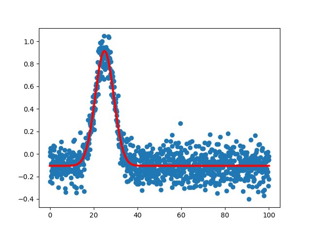

arraymanip
Everyday use functions for array manipulation.
-
backpack.arraymanip.index(x, value) Returns the index of the element in array which is closest to value.
- Parameters
x (list or array) – 1D array.
value (float or int) – value.
- Returns
index (int)
-
backpack.arraymanip.sort(ref, *args) Returns sorted arrays based on a reference array.
- Parameters
ref (list or array) – 1D array.
*args – array to sort.
- Returns
sorted arrays.
-
backpack.arraymanip.extract(x, y, ranges) Returns specifc data ranges from x and y.
- Parameters
x (list or array) – 1D reference vector.
y (list or array) – 1D y-coordinates or list of several data sets sharing the same x-coordinates.
ranges (list) – a pair of values or a list of pairs. Each pair represents the start and stop of a data range from ref.
- Returns
x and y arrays.
Examples
>>> x = [0, 1, 2, 3, 4, 5, 6, 7, 8, 9] >>> y = np.array(x)**2 >>> ranges = ((0, 3), (7.5, 9)) >>> x_sliced, y_sliced = am.extract(x, y, ranges) >>> print(x_sliced) [0 1 2 3 8 9] >>> print(y_sliced) [0 1 4 9 64 81]
-
backpack.arraymanip.moving_average(x, n) Returns the moving average of an array.
- Parameters
x (list or array) – 1D array.
n (int) – number of points to average.
- Returns
array of lenght given by (len(x)-n+1).
Example
>>> x = [0,1,2,3,4,5,6,7,8,9] >>> print(am.moving_average(x, 1)) [0. 1. 2. 3. 4. 5. 6. 7. 8. 9.] >>> print(am.moving_average(x, 2)) [0.5 1.5 2.5 3.5 4.5 5.5 6.5 7.5 8.5] >>> print(am.moving_average(x, 3)) [1. 2. 3. 4. 5. 6. 7. 8.] >>> print(am.moving_average(x, 4)) [1.5 2.5 3.5 4.5 5.5 6.5 7.5]
-
backpack.arraymanip.derivative(x, y, order=1) Returns the derivative of y-coordinates as a function of x-coodinates.
- Parameters
x (list or array) – 1D array x-coordinates.
y (list or array) – 1D array y-coordinates.
order (number, optional) – derivative order.
- Returns
x and y arrays.
-
backpack.arraymanip.shifted(x, y, shift, mode='hard') Shift (x, y) data.
- Parameters
x (list or array) – 1D array.
y (list or array) – 1D array.
shift (float or int) – shift value.
mode (string, optional) –
mode='x'ormode='hard'y is fully preserved while x is shifted.
mode='y','interp', or'soft'x is preserved while y is interpolated with a shift
mode='roll',x and y are preserved and y elements are just rolled along the array (in this case
shiftvalue must be an integer).
- Returns
Shifted x and y.
Warning
It is always better to use
mode='hard'or'roll'since the form of y is fully preserved (no interpolation). After applying a shift using themode='interp', one can apply a ‘inverse’ shift to retrieve the original data. The diference between the retrieved y data and the original data will give an ideia of the information loss caused by the interpolation.
-
backpack.arraymanip.peak_fit(x, y, guess_c=None, guess_A=None, guess_w=None, guess_offset=0, fixed_m=False, asymmetry=False) Simple peak fit function. Data is fitted with a pseudo-voigt curve.
\[y(x) = A \left[ m \frac{w^2}{w^2 + (x-c)^2} + (1-m) e^{-\frac{4 \ln(2) (x-c)^2}{w^2}} \right]\]- Parameters
x (list or array) – 1D array x-coordinates.
y (list or array) – 1D array y-coordinates.
guess_c (float or int, optional) – guess Center. If None, it will be guessed by the position of
guess_A.guess_A (float or int, optional) – guess Amplitude. If None, it will be guessed by the the maximum y-coordinate.
guess_w (float or int, optional) – guess FWHM. If None, it will be guessed as 10% of
guess_cguess_offset (float or int, optional) – guess Offset. If None, it will be guessed as zero [0].
fixed_m (False or number) – Factor from 1 to 0 of the lorentzian amount. If False, ``m` will be a fitting parameter. If
fixed_m=<number>,<number>will be used form.asymmetry (Boolean, , optional) – half of the peak with a different
wandmthan the second half. The optimalwparameter returned will be the sum of thewof the first and second halfs.
- Returns
2 column (x, y) array with “Smoothed” fitted peak (array lenght 100 bigger than input x, y).
An array with the optimized parameters
One standard deviation errors on the parameters
Peak function
Example
>>> import matplotlib.pyplot as plt >>> from backpack.model_functions import fwhmGauss >>> x = np.linspace(0, 100, 1000) >>> amp = 1 >>> w = 10 >>> c = 25 >>> y = fwhmGauss(x, amp, c, w) + np.random.normal(-0.1, 0.1, 1000) >>> smooth, popt, err, f = am.peak_fit(x, y) >>> print(f'A = {popt[0]} +/- {err[0]}') A = 1.0187633097698565 +/- 0.015832212669397393 >>> print(f'c = {popt[1]} +/- {err[1]}') c = 24.940397238212615 +/- 0.0674408860045828 >>> print(f'w = {popt[2]} +/- {err[2]}') w = 9.952479117885305 +/- 0.24269432941302957 >>> print(f'offset = {popt[3]} +/- {err[3]}') offset = -0.10529818707281721 +/- 0.032115907889677234 >>> print(f'm = {popt[4]} +/- {err[4]}') m = 2.4612897990598044e-14 +/- 0.005287100795322343 >>> plt.scatter(x, y) >>> plt.plot(smooth[:, 0], smooth[:, 1], color='r', lw=3) >>> plt.show()
{kind=link}
-
backpack.arraymanip.flattened(x) Returns the flattened list or tuple.
-
backpack.arraymanip.transposed(arr) Returns transposed lists/arrays.
-
backpack.arraymanip.compressed(x, selectors) compress(‘ABCDEF’, [1,0,1,0,1,1]) –> A C E F